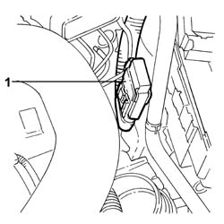
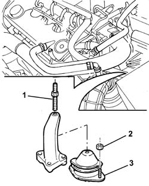

1008B30 Gearbox side mount FLEXIBLE BLOCK/S - Replace
- Path
- Procedures > 10 ENGINE > 1008 POWER UNIT SUPPORTS > 1008B power unit mounting blocks > 1008B30 Gearbox side mount FLEXIBLE BLOCK/S - Replace
- Kind
- repair procedure (removal / refitting; the operation number is the code)
- Applies to
- engines: 2.4 JTD 10V; all production periods
- Interactive page
- https://sloeber94.github.io/elrnDB-lThss/en/#/75478
Applies to: all engines; all production periods
 Removing
Removing
 Refitting
Refitting1. Release the fuse box illustrated from the junction unit.

Applies to: all engines; all production periods
See in Op. 7055B54 PROTECTION/GUARD under engine - R.R.
- Place a hydraulic device for supporting the power unit under the gearbox.
1. Undo the pin fixing the engine support to the flexible mounting.
2. Undo the nuts fixing the flexible mounting.
3. Remove the flexible mounting.

Applies to: all engines; all production periods
Refitting
Removing- Fit the flexible mounting in the special housing.
- Tighten the nuts fixing the flexible mounting to torque.
 | Value - daNm | Fastening | Component | Ø |
|---|---|---|---|---|
. | 5 | Nut | GEARBOX SIDE RUBBER MOUNT | M10X 1.25 |
- Tighten the pin fixing the engine support to the flexible mounting to torque.
| Value - daNm | Fastening | Component | Ø |
|---|---|---|---|---|
. | (Mounting side) 5 | Threaded pin | POWER UNIT GEAR BOX END RIGID MOUNT | M10 |
- Remove the hydraulic device for supporting the power unit from underneath the gearbox.
See in Op. 7055B54 PROTECTION/GUARD under engine - R.R.
- Position it in the special housing in the engine compartment junction unit.